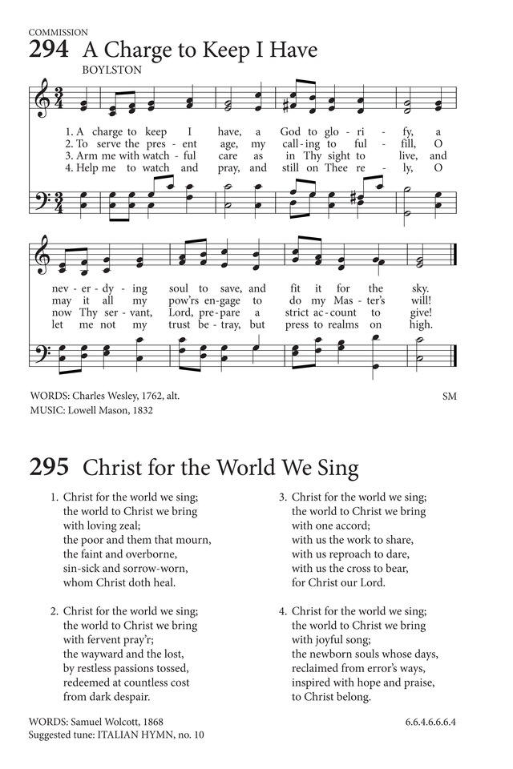

|
|
颂主新歌 |
|
|
1 Come Lord, and tarry not; 2 Come, for Thy saints still wait; 3 Come, for creation groans, 4 Come, and make all things new; 5 Come, and bring Thy reign Amen. The Hymnal: Published by the authority of the General Assembly of the Presbyterian Church in the U.S.A., 1895 |
1.求主速速降临，门徒已等候多年，
|
|
|
https://www.mred365.cn/szxg/7162.html
 |
||
|
|
|
|


Come, Lord, and Tarry Not (St Bride) https://youtu.be/GKe8D2ptCfQ
| Text: | Come, Lord, and Tarry Not |
| Author: | Horatius Bonar |
| Tune: | BOYLSTON |
| Composer: | Lowell Mason |

Notes
Come, Lord, and tarry not. H.Bonar. [Second Advent desired.] Printed in May, 1846, at the end of one of the Kelso Tracts, and again in his Hymns of Faith and Hope, 1857. It is in 14 stanzas of 4 lines, with the heading "Come, Lord," and the motto from St. Augustine, "Senuit mundus." Centos, varying in length and construction, but all beginning with stanza i., are in extensive use in America. In Great Britain it is less popular. A cento, beginning with stanza ii., "Come, Lord; Thy saints for Thee," is also given in Kennedy, 1863, No. 22.
--John Julian, Dictionary of Hymnology (1907)
Tune Information
| Title: | BOYLSTON |
| Composer: | Lowell Mason (1832) |
| Meter: | 6.6.8.6 |
| Incipit: | 53456 51176 65534 |
| Key: | C Major |